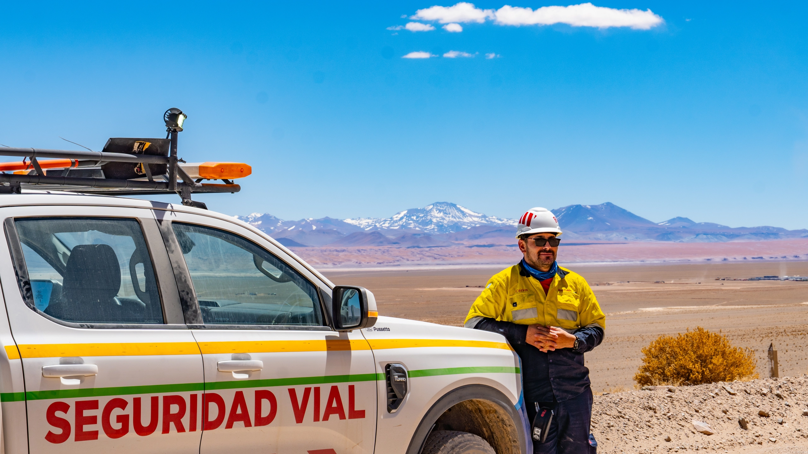
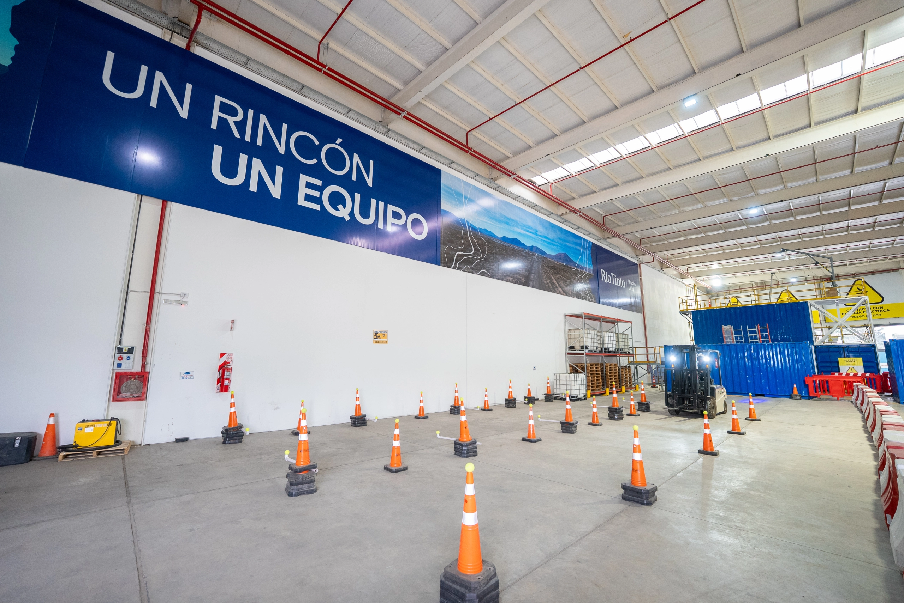
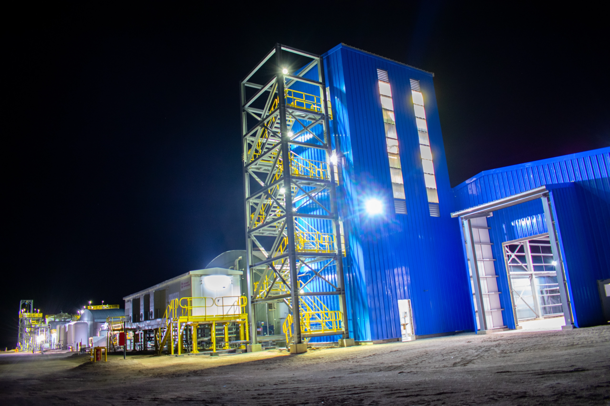

Minexus
Accedé a Minexus, la plataforma utilizada por Rio Tinto para la gestión de contratistas. Desde allí podrás administrar habilitaciones, documentación, requisitos y otros procesos relacionados con la prestación de servicios.
Acceder a MinexusRio Tinto Connect
El enlace directo y abierto al que los contratistas pueden acceder para obtener información de referencia, procedimientos, enlaces útiles, contactos, entre otros recursos de utilidad para su gestión. ¡No dudés en compartir este enlace con tus contratistas!
Acceder a Rio Tinto Connect
MITTI / Forewood
Si el contrato contempla actividades por más de 30 días, asegurate de que los supervisores y líderes del contratista cuenten con acceso a SafetyCulture / MITTI y Forewood. Estas plataformas son fundamentales para el seguimiento del desempeño y cumplimiento de HSE.
Gestionar accesos
Guía de Habilitación
El recorrido definitivo que te guiará paso a paso en la obtención de la habilitación en la plataforma Minexus. Recomendado para dueños de contrato, administradores y líderes para comprender el proceso integral.
Abrir Guía interactiva
Capacitación CMX
Introducción al marco CMX para la excelencia en la gestión de contratistas. Material de referencia ineludible para introducirte a las prácticas clave de tu rol como dueño de contrato.
Acceder en WorkDayVideo KP2: Kick-off
Conocé el proceso para registrar correctamente las Reuniones de Implementación (Kick-off) en SafetyCulture / MITTI. Requisito obligatorio para nuevos contratos y cambios de alcance.
Ver Video en WDVideo KP3: Verificación
Aprendé cómo completar correctamente la Verificación de Gestión de Contratistas (KP3) en la plataforma SafetyCulture / MITTI.
Ver Video en WDVideo KP4: Desempeño
Aprendé cómo realizar y registrar correctamente la Reunión de Gestión de Desempeño de Contratistas (KP4) para el seguimiento de KPI's.
Ver Video en WDVideo PtW: Permisos
Gestión y registro de Permisos de Trabajo (PtW) en SafetyCulture. Identificá riesgos y verificá controles según los estándares de seguridad de Rio Tinto Rincón.
Ver Video en WD